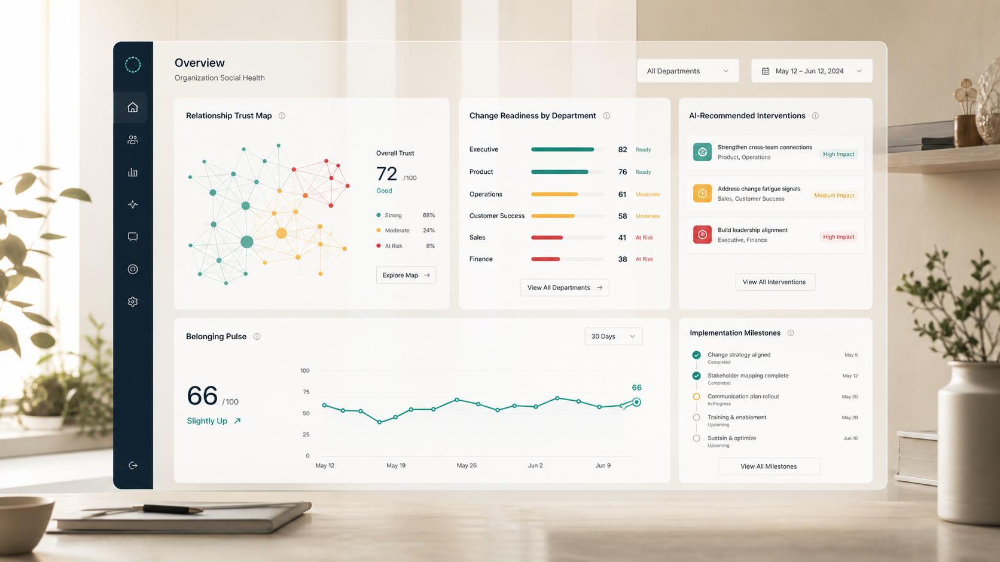

Social health is infrastructure
The quality of connection determines how fast information, confidence, and accountability move.

Human-centered AI-powered change management through social health
Social Health Systems gives enterprises the operating model for connection, belonging, and relational trust, then uses AI to help leaders see where change is stalling and what to do next.
First principles
Enterprise change fails when the relational layer is invisible: mistrust, social isolation, leadership distance, team fragmentation, and low belonging. SHS makes that layer measurable, coachable, and operational.
The quality of connection determines how fast information, confidence, and accountability move.
Models can identify patterns and recommend actions, but the intervention must preserve trust, dignity, and context.
A one-time workshop cannot carry a transformation. Teams need standards, rituals, measurement, and reinforcement.
The enterprise system
SHS is not another engagement survey or training library. It is a social health operating system: shared language, analytics, AI-assisted action, and implementation support in one coherent model.
Map trust, belonging, isolation, relationship load, and change readiness by team, function, and leadership layer.
Use AI to identify where relational friction is most likely to slow adoption and which interventions matter first.
Equip leaders, managers, and change champions with practical connection behaviors and conversation rhythms.
Track social health as a leading indicator for retention, resilience, collaboration, and transformation progress.
What you get
A standards-based model for building, maintaining, and repairing mutually beneficial relationships across self, teams, and community. It becomes the common language for change.
Pulse measurement, network signals, and team-level diagnostics that reveal adoption risk earlier than lagging business metrics.
Manager guides, change rituals, conversation tools, and train-the-trainer pathways built for real operating cadence.
Clear reporting for where trust is improving, where risk is compounding, and where sponsorship needs to become more visible.
Recognition levels and maturity criteria that help organizations move from program activity to cultural capability.
AI with a social health spine
The SHS model keeps AI anchored in human dignity and relationship repair. It helps leaders notice weak signals, test interventions, and reinforce behaviors without reducing culture to a score.
Aggregate social health signals from surveys, listening sessions, manager observations, and operational context.
Identify relationship patterns behind resistance, burnout, silence, fragmentation, and low confidence.
Suggest targeted actions: leader conversations, peer rituals, team repair practices, and escalation pathways.
Compare intervention impact over time so the organization builds a repeatable change capability.
Business case
When trust and belonging decline, organizations pay through turnover, low adoption, conflict drag, manager burnout, and stalled transformation. SHS gives leadership an operating view of those risks.
Estimated replacement cost range of annual salary for many roles, depending on complexity and seniority.
Reduction in at-risk behaviors reported in an education implementation using the social health framework.
Positive approval reported by students in a high-pressure environment after framework implementation.
Enterprise rollout
Define the change thesis, priority populations, decision rights, and success measures.
Run diagnostics to identify trust gaps, relationship strain, and readiness risk.
Equip managers and champions with practices, scripts, rituals, and AI-supported guidance.
Review outcomes, refine interventions, certify maturity, and expand to additional teams.
Next move
Start with an enterprise social health diagnostic and a practical roadmap for human-centered AI change management.